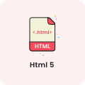

My Skills
Pada saat tahun 2019 waktu saya masih di bangku SMK saya sudah menguasai HTML, CSS dan sedikit Javascript. Saya belajar bahasa PHP pada saat kuliah dan seiring waktu sampai sekarang saya sudah menguasai beberapa bahasa pemrograman.
